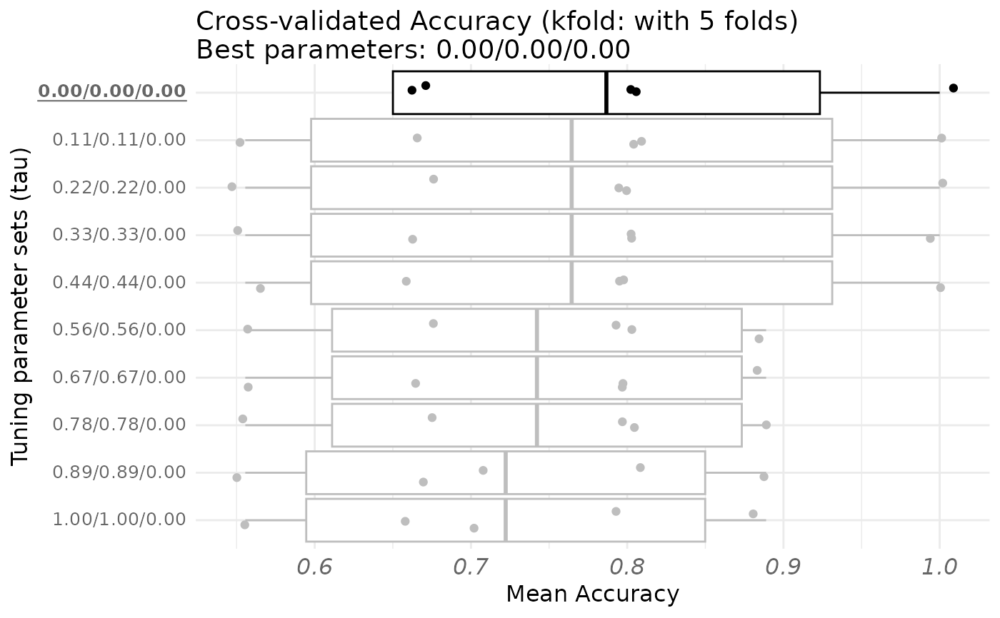

Plot a fitted cross-validation object. The parameters tuned for maximizing the cross-validated score is displayed in the title. The set of candidate tuning parameters are represented on the y-axis. A boxplot of the cross-validated scores are displayed on the x-axis.
Usage
# S3 method for cval
plot(
x,
type = "sd",
cex = 1,
cex_main = 14 * cex,
cex_sub = 12 * cex,
cex_point = 3 * cex,
cex_lab = 12 * cex,
display_order = TRUE,
...
)Arguments
- x
A rgcca_cv object (see rgcca_cv)
- type
A string indicating the statistics depicted in the boxplot:
"sd" (default): the middle bar corresponds to the mean and limits of the boxes are given by the mean plus or minus the standard deviation.
"quantile": the middle bar corresponds to the median and limits of the boxes are given by the 25% and 75% quantiles.
- cex
A numeric defining the size of the objects in the plot. Default is one.
- cex_main
A numeric defining the font size of the title. Default is 14 * cex.
- cex_sub
A numeric defining the font size of the subtitle. Default is 12 * cex.
- cex_point
A numeric defining the font size of the points. Default is 3 * cex.
- cex_lab
A numeric defining the font size of the labels. Default is 12 * cex.
- display_order
A logical value for ordering the variables. If TRUE, variables are ordered from highest to lowest absolute value. If FALSE, the block order is used. Default is TRUE.
- ...
Additional graphical parameters.
Examples
data("Russett")
blocks <- list(
agriculture = Russett[, seq(3)],
industry = Russett[, 4:5],
politic = as.factor(apply(Russett[, 9:11], 1, which.max))
)
cv_out <- rgcca_cv(blocks,
response = 3, method = "rgcca",
par_type = "tau",
par_value = 1,
n_run = 1, n_cores = 1,
prediction_model = "lda",
metric = "Accuracy",
verbose = FALSE
)
print(cv_out)
#> Call: method='rgcca', superblock=FALSE, scale=TRUE, scale_block=TRUE, init='svd',
#> bias=TRUE, tol=1e-08, NA_method='na.ignore', ncomp=c(1,1,1), response=3,
#> comp_orth=TRUE
#> There are J = 3 blocks.
#> The design matrix is:
#> agriculture industry politic
#> agriculture 0 0 1
#> industry 0 0 1
#> politic 1 1 0
#>
#> The factorial scheme is used.
#>
#> Tuning parameters (tau) used:
#> agriculture industry politic
#> 1 1.000 1.000 0
#> 2 0.889 0.889 0
#> 3 0.778 0.778 0
#> 4 0.667 0.667 0
#> 5 0.556 0.556 0
#> 6 0.444 0.444 0
#> 7 0.333 0.333 0
#> 8 0.222 0.222 0
#> 9 0.111 0.111 0
#> 10 0.000 0.000 0
#>
#> Validation: kfold with 5 folds and 1 run(s))
#> Prediction model: lda
#>
#> Tuning parameters Mean Accuracy Sd
#> 1 1.00/1.00/0.00 0.684 0.1190
#> 2 0.89/0.89/0.00 0.684 0.1190
#> 3 0.78/0.78/0.00 0.684 0.1190
#> 4 0.67/0.67/0.00 0.684 0.1190
#> 5 0.56/0.56/0.00 0.707 0.1251
#> 6 0.44/0.44/0.00 0.707 0.1251
#> 7 0.33/0.33/0.00 0.707 0.1251
#> 8 0.22/0.22/0.00 0.707 0.1251
#> 9 0.11/0.11/0.00 0.729 0.1261
#> 10 0.00/0.00/0.00 0.791 0.0947
#>
#> The best combination is: 0.00/0.00/0.00 for a mean Accuracy of 0.791.
plot(cv_out)
